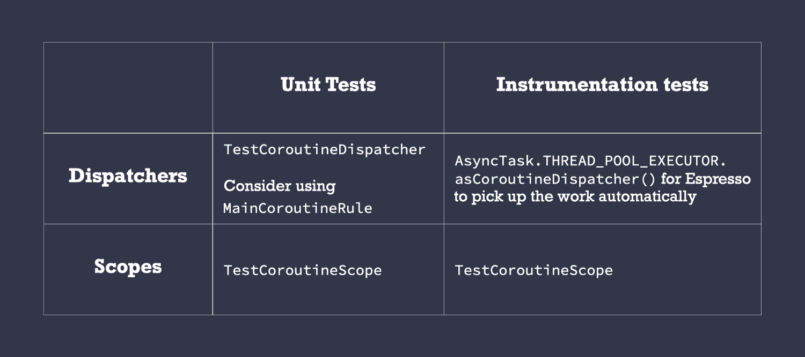

Coroutines & Patterns for work that shouldn’t be cancelled
Best practices for work that needs to run beyond its current scope with an applicationScope!
In part 2 of the Cancellation and Exceptions in Coroutines series, we learnt the importance of cancelling work when it’s no longer needed. On Android, you can use the CoroutineScopes provided by Jetpack: viewModelScope or lifecycleScope that cancel any running work when their scope completes — that is when the Activity/Fragment/Lifecycle completes. If you’re creating your own CoroutineScope, make sure you tie it to a Job and call cancel when needed.
However, there are cases when you want an operation to complete even if the user navigated away from a screen. As such, you don’t want the work to be cancelled (e.g. writing to a database or making a certain network request to your server).
Keep reading for a pattern to achieve this!
Coroutines or WorkManager?
Coroutines will run as long as your application process is alive. If you need to run operations that should outlive the process (e.g. sending logs to your remote server), use WorkManager instead on Android. WorkManager is the library to use for critical operations that are expected to execute at some point in the future.
Use coroutines for operations that are valid in the current process and can be cancelled if the user kills the app (e.g. making a network request you want to cache). What’s the pattern to trigger these operations?
Coroutines best practices
Since this pattern builds upon other coroutine best practices; let’s recap them:
1. Inject Dispatchers into classes
Don’t hardcode them when creating new coroutines or calling withContext.
✅ Benefits: ease of testing as you can easily replace them for both unit and instrumentation tests.
2. The ViewModel/Presenter layer should create coroutines
If it’s a UI-only operation, then the UI layer can do it. If you think this is not possible in your project, it’s likely you’re not following best practice #1 (i.e. it’s more difficult to test VMs that don’t inject Dispatchers; in that case exposing suspend functions makes it doable).
✅ Benefits: The UI layer should be dumb and not directly trigger any business logic. Instead, defer that responsibility to the ViewModel/Presenter layer. Testing the UI layer requires instrumentation tests in Android which need an emulator to run.
3. The layers below the ViewModel/Presenter layer should expose suspend functions and Flows
If you need to create coroutines, use coroutineScope or supervisorScope. If you need them to follow a different scope, this is what this article is about! Keep reading!
✅ Benefits: The caller (generally the ViewModel layer) can control the execution and lifecycle of the work happening in those layers, being able to cancel when needed.
Operations that shouldn’t be cancelled in Coroutines
Imagine we have a ViewModel and a Repository in our app with the following logic:
class MyViewModel(private val repo: Repository) : ViewModel() {
fun callRepo() {
viewModelScope.launch {
repo.doWork()
}
}
}
class Repository(private val ioDispatcher: CoroutineDispatcher) {
suspend fun doWork() {
withContext(ioDispatcher) {
doSomeOtherWork()
veryImportantOperation() // This shouldn’t be cancelled
}
}
}
We don’t want veryImportantOperation() to be controlled by viewModelScope as it could be cancelled at any point. We want that operation to outlive viewModelScope. How can we achieve that?
To do this, create your own scope in the Application class and call those operations in coroutines started by it. That scope should be injected in the classes that need it.
The benefits of creating your own CoroutineScope vs other solutions we’ll see later (like GlobalScope) is that you can configure it as you wish. Do you need a CoroutineExceptionHandler? Do you have your own thread pool you use as a Dispatcher? Place all that common configuration there in its CoroutineContext!
You can call it applicationScope and it must contain a SupervisorJob() so that failures in coroutines don’t propagate in the hierarchy (as seen in part 3 of the series):
class MyApplication : Application() {
// No need to cancel this scope as it'll be torn down with the process
val applicationScope = CoroutineScope(SupervisorJob() + otherConfig)
}
We don’t need to cancel this scope since we want it to remain active as long as the application process is alive, so we don’t hold a reference to the SupervisorJob. We can use this scope to run coroutines that need a longer lifetime than the calling scope might offer in our app.
For operations that shouldn’t be cancelled, call them from a coroutine created by an application CoroutineScope
Whenever you create a new Repository instance, pass in the applicationScope we created above. For tests, check out the Testing section below.
Which coroutine builder to use?
Depending on veryImportantOperation’s behavior, you’d need to start a new coroutine using either launch or async:
-
If it needs to return a result, use
asyncand callawaitto wait for it to finish. -
If not, use
launchand wait for it to finish withjoin. Note that as explained in part 3 of the series, you have to handle exceptions manually inside the launch block.
This is how you’d trigger the coroutine using launch:
class Repository(
private val externalScope: CoroutineScope,
private val ioDispatcher: CoroutineDispatcher
) {
suspend fun doWork() {
withContext(ioDispatcher) {
doSomeOtherWork()
externalScope.launch {
// if this can throw an exception, wrap inside try/catch
// or rely on a CoroutineExceptionHandler installed
// in the externalScope's CoroutineScope
veryImportantOperation()
}.join()
}
}
}
or using async:
class Repository(
private val externalScope: CoroutineScope,
private val ioDispatcher: CoroutineDispatcher
) {
suspend fun doWork(): Any { // Use a specific type in Result
withContext(ioDispatcher) {
doSomeOtherWork()
return externalScope.async {
// Exceptions are exposed when calling await, they will be
// propagated in the coroutine that called doWork. Watch
// out! They will be ignored if the calling context cancels.
veryImportantOperation()
}.await()
}
}
}
In any case, the ViewModel code doesn’t change and with the above, even if the viewModelScope gets destroyed, the work using externalScope will keep running. Furthermore, doWork() won’t return until veryImportantOperation() completes as with any other suspend call.
What about something simpler?
Another pattern that could serve some use cases (and it’s probably the first solution anyone would come up with) is wrapping veryImportantOperation in the externalScope’s context using withContext as follows:
class Repository(
private val externalScope: CoroutineScope,
private val ioDispatcher: CoroutineDispatcher
) {
suspend fun doWork() {
withContext(ioDispatcher) {
doSomeOtherWork()
withContext(externalScope.coroutineContext) {
veryImportantOperation()
}
}
}
}
However, this approach has some caveats that you should be aware of:
-
If the coroutine that calls
doWorkis cancelled whileveryImportantOperationis getting executed, the coroutine will keep executing until the next cancellation point, not afterveryImportantOperationfinishes executing. -
CoroutineExceptionHandlers don’t work as you’d expect when the context is used inwithContextsince the exception will be re-thrown.
Testing
As we’ll need to inject both Dispatchers and CoroutineScopes, what should you inject in those cases?
 What to inject in testing
🔖 Legend: TestCoroutineDispatcher, MainCoroutineRule, TestCoroutineScope, AsyncTask.THREAD_POOL_EXECUTOR.asCoroutineDispatcher()
Alternatives
There are other ways to implement this behavior with Coroutines. However, those solutions cannot be applied systematically in all use cases. Let’s see some alternatives and why/when you should/shouldn’t use them.
❌ GlobalScope
There are multiple reasons why you shouldn’t use GlobalScope:
-
Promotes hard-coding values. It might be tempting to hardcode
Dispatchersif you useGlobalScopestraight-away. That’s a bad practice! -
It makes testing very hard. As your code is going to be executed in an uncontrolled scope, you won’t be able to manage execution of work started by it.
-
You can’t have a common CoroutineContext for all coroutines built into the scope as we did with the
applicationScope. Instead, you’d have to pass a commonCoroutineContextto all coroutines started byGlobalScope.
Recommendation: Don’t use it directly.
❌ ProcessLifecycleOwner scope in Android
In Android, there’s an applicationScope available in the androidx.lifecycle:lifecycle-process library, accessed with ProcessLifecycleOwner.get().lifecycleScope.
In this case, you’d inject a LifecycleOwner instead of a CoroutineScope as we did before. In production, you’d pass in ProcessLifecycleOwner.get() and in unit tests, you can create a fake LifecycleOwner using LifecycleRegistry.
Notice that the default CoroutineContext of this scope uses Dispatchers.Main.immediate which might not be desirable for background work. As with GlobalScope, you’d have to pass a common CoroutineContext to all coroutines started by it.
Because of all the above, this alternative requires more work than just creating a CoroutineScope in the Application class. Also, I don’t personally like having classes related to the Android lifecycle in layers below the ViewModel/Presenter as these layers should be platform agnostic.
Recommendation: Don’t use it directly.
⚠️ Disclaimer
If it turns out that the CoroutineContext of your applicationScope matches the GlobalScope or ProcessLifecycleOwner.get().lifecycleScope one, you can directly assign them as follows:
class MyApplication : Application() {
val applicationScope = GlobalScope
}
You still get all the benefits mentioned above and you can easily change it if needed in the future.
❌ ✅ Using NonCancellable
As seen in part 2 of the series, you can use withContext(NonCancellable) to be able to call suspend functions in a cancelled coroutine. We suggested using it to perform cleanup code that can suspend. However, you shouldn’t abuse it.
Doing this is very risky as you lose control of the execution of the coroutine. It’s true that it produces more concise and easier to read code but the problems this can cause in the future are unpredictable.
Example of its usage:
class Repository(
private val ioDispatcher: CoroutineDispatcher
) {
suspend fun doWork() {
withContext(ioDispatcher) {
doSomeOtherWork()
withContext(NonCancellable) {
veryImportantOperation()
}
}
}
}
As very tempting as it can be to do, you might not always know what’s behind veryImportantOperation(): maybe it’s an external library, maybe the implementation is behind an interface,… What problems can happen?
-
You won’t be able to stop those operations in tests.
-
An endless loop that uses delay won’t be able to cancel anymore.
-
Collecting a Flow within it makes the Flow non-cancellable from the outside.
-
…
These problems can lead to subtle and very hard to debug bugs.
Recommendation: use it ONLY for suspending cleanup code.
Whenever you need some work to run beyond its current scope, we recommend creating a custom scope in your Application class and running coroutines within it. Avoid using GlobalScope, ProcessLifecycleOwner scope and NonCancellable for this type of work.